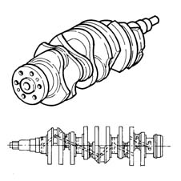

DESCRIPTION OF COMPONENTS
- Path
- Descriptions > 10 ENGINE > 1024 CRANKSHAFT AND FLYWHEEL > 1024A CRANKSHAFT > DESCRIPTION OF COMPONENTS
- Kind
- system description
- Applies to
- engines: 3.0 V6, 3.2 V6; all production periods
- Interactive page
- https://sloeber94.github.io/elrnDB-lThss/en/#/612977
Applies to: engines: 3.0 V6, 3.2 V6; all production periods
CRANKSHAFT
The shaft is forged out of high strength nitrided steel and rests on four main bearings. The shaft shoulder is on the rear main bearing.
Nine counterweights allow accurate balancing of rotating masses.
A channel running along the length of the shaft lubricates the main journals and crankpins.
